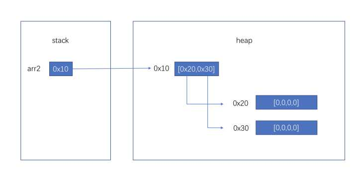
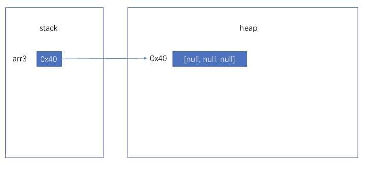
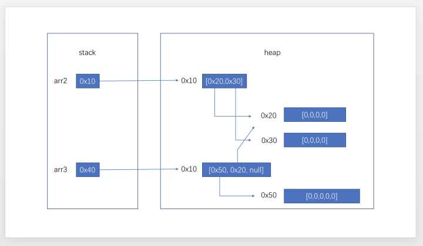
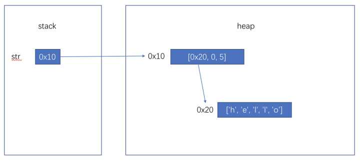

Java 面试基础知识
Java设计思想
0. OOP是什么
面向对象编程（Object Oriented Programming）
1.面向对象的特征有哪些
面向对象的特征有：抽象、封装、继承、多态
- 抽象：抽象是将一类对象的共同特征总结出来构造类的过程，包括数据抽象和行为抽象两方面。抽象只关注对象有哪些属性和行为，并不关注这些行为的细节是什么。
- 封装：隐藏对象的实现细节，仅对外公开接口，是针对一个对象来说的
- 多态：多态性是指允许不同子类型的对象对同一消息作出不同的响应。简单的说就是用同样的对象引用调用同样的方法但是做了不同的事情
- 继承：继承是从已有类得到继承信息创建新类的过程。提供继承信息的类被称为父类（超类、基类）；得到继承信息的类被称为子类（派生类）
2. java是值传递还是引用传递
java是值传递。可以理解为传入的是一个引用的副本，指向统一地址。当值改变时，原引用和副本指向地址中的值都变了；当副本指向的地址改变，指向新值时，原引用指向的地址没有改变，原值也没有改变。
基础类型如int long等，引用类型例如String
第一个例子：基本类型
void foo(int value) {
value = 100;
}
foo(num); // num 没有被改变
第二个例子：没有提供改变自身方法的引用类型
void foo(String text) {
text = "windows";
}
foo(str); // str 也没有被改变
第三个例子：提供了改变自身方法的引用类型
StringBuilder sb = new StringBuilder("iphone");
void foo(StringBuilder builder) {
builder.append("4");
}
foo(sb); // sb 被改变了，变成了"iphone4"。
第四个例子：提供了改变自身方法的引用类型，但是不使用，而是使用赋值运算符。
StringBuilder sb = new StringBuilder("iphone");
void foo(StringBuilder builder) {
builder = new StringBuilder("ipad");
}
foo(sb); // sb 没有被改变，还是 "iphone"。Java 堆(Heap) 和 栈(Stack) 。
存储方式
从局部变量/方法参数开始讲起：
局部变量和方法参数在jvm中的储存方法是相同的，都是在栈上开辟空间来储存的，随着进入方法开辟，退出方法回收。以32位JVM为例，boolean/byte/short/char/int/float以及引用都是分配4字节空间，long/double分配8字节空间。对于每个方法来说，最多占用多少空间是一定的，这在编译时就可以计算好。
我们都知道JVM内存模型中有，stack和heap的存在，但是更准确的说，是每个线程都分配一个独享的stack，所有线程共享一个heap。对于每个方法的局部变量来说，是绝对无法被其他方法，甚至其他线程的同一方法所访问到的，更遑论修改。
当我们在方法中声明一个 int i = 0，或者 Object obj = null 时，仅仅涉及stack，不影响到heap，当我们 new Object() 时，会在heap中开辟一段内存并初始化Object对象。当我们将这个对象赋予obj变量时，仅仅是stack中代表obj的那4个字节变更为这个对象的地址。
数组类型引用和对象：
当我们声明一个数组时，如int[] arr = new int[10]，因为数组也是对象，arr实际上是引用，stack上仅仅占用4字节空间，new int[10]会在heap中开辟一个数组对象，然后arr指向它。
当我们声明一个二维数组时，如 int[][] arr2 = new int[2][4]，arr2同样仅在stack中占用4个字节，会在内存中开辟一个长度为2的，类型为int[]的数组，然后arr2指向这个数组。这个数组内部有两个引用（大小为4字节），分别指向两个长度为4的类型为int的数组。

所以当我们传递一个数组引用给一个方法时，数组的元素是可以被改变的，但是无法让数组引用指向新的数组。
你还可以这样声明：int[][] arr3 = new int[3][]，这时内存情况如下图

你还可以这样 arr3[0] = new int [5]; arr3[1] = arr2[0];

关于String：
原本回答中关于String的图解是简化过的，实际上String对象内部仅需要维护三个变量，char[] chars, int startIndex, int length。而chars在某些情况下是可以共用的。但是因为String被设计成为了不可变类型，所以你思考时把String对象简化考虑也是可以的。
String str = new String(“hello”)

当然某些JVM实现会把”hello”字面量生成的String对象放到常量池中，而常量池中的对象可以实际分配在heap中，有些实现也许会分配在方法区，当然这对我们理解影响不大。
3. 设计模式之面向对象七大基本原则
单一职责原则（Single Responsibility Principle）
每一个类应该专注于做一件事情。
里氏替换原则（Liskov Substitution Principle）
超类存在的地方，子类是可以替换的。
依赖倒置原则（Dependence Inversion Principle）
实现尽量依赖抽象，不依赖具体实现。
接口隔离原则（Interface Segregation Principle）
应当为客户端提供尽可能小的单独的接口，而不是提供大的总的接口。
迪米特法则（Law Of Demeter）
又叫最少知识原则，一个软件实体应当尽可能少的与其他实体发生相互作用。
开闭原则（Open Close Principle）
面向扩展开放，面向修改关闭。
组合/聚合复用原则（Composite/Aggregate Reuse Principle CARP）
尽量使用合成/聚合达到复用，尽量少用继承。原则： 一个类中有另一个类的对象。
细则
单一职责原则（Single Responsibility Principle）
因为：
可以降低类的复杂度，一个类只负责一项职责，其逻辑肯定要比负责多项职责简单的多；提高类的可读性，提高系统的可维护性；变更引起的风险降低，变更是必然的，如果单一职责原则遵守的好，当修改一个功能时，可以显著降低对其他功能的影响。需要说明的一点是单一职责原则不只是面向对象编程思想所特有的，只要是模块化的程序设计，都适用单一职责原则。
所以：
从大局上看Android中的Paint和Canvas等类都遵守单一职责原则，Paint和Canvas各司其职。
里氏替换原则（Liskov Substitution Principle）
因为：
里氏替换原则告诉我们，在软件中将一个基类对象替换成它的子类对象，程序将不会产生任何错误和异常，反过来则不成立，如果一个软件实体使用的是一个子类对象的话，那么它不一定能够使用基类对象。里氏替换原则是实现开闭原则的重要方式之一，由于使用基类对象的地方都可以使用子类对象，因此在程序中尽量使用基类类型来对对象进行定义，而在运行时再确定其子类类型，用子类对象来替换父类对象。
所以：
使用里氏替换原则时需要注意，子类的所有方法必须在父类中声明，或子类必须实现父类中声明的所有方法。尽量把父类设计为抽象类或者接口，让子类继承父类或实现父接口，并实现在父类中声明的方法，运行时，子类实例替换父类实例，我们可以很方便地扩展系统的功能，同时无须修改原有子类的代码，增加新的功能可以通过增加一个新的子类来实现。
从大局看Java的多态就属于这个原则。
依赖倒置原则（Dependence Inversion Principle）
因为：
具体依赖抽象，上层依赖下层。假设B是较A低的模块，但B需要使用到A的功能，这个时候，B不应当直接使用A中的具体类；而应当由B定义一抽象接口，并由A来实现这个抽象接口，B只使用这个抽象接口；这样就达到了依赖倒置的目的，B也解除了对A的依赖，反过来是A依赖于B定义的抽象接口。通过上层模块难以避免依赖下层模块，假如B也直接依赖A的实现，那么就可能造成循环依赖。
所以：
采用依赖倒置原则可以减少类间的耦合性，提高系统的稳定性，减少并行开发引起的风险，提高代码的可读性和可维护性。
从大局看Java的多态就属于这个原则。
接口隔离原则（Interface Segregation Principle）
因为：
提供尽可能小的单独接口，而不要提供大的总接口。暴露行为让后面的实现类知道的越少越好。譬如类ProgramMonkey通过接口CodeInterface依赖类CodeC，类ProgramMaster通过接口CodeInterface依赖类CodeAndroid，如果接口CodeInterface对于类ProgramMonkey和类CodeC来说不是最小接口，则类CodeC和类CodeAndroid必须去实现他们不需要的方法。将臃肿的接口CodeInterface拆分为独立的几个接口，类ProgramMonkey和类ProgramMaster分别与他们需要的接口建立依赖关系。也就是采用接口隔离原则。
所以：
建立单一接口，不要建立庞大的接口，尽量细化接口，接口中的方法尽量少。也就是要为各个类建立专用的接口，而不要试图去建立一个很庞大的接口供所有依赖它的类去调用。依赖几个专用的接口要比依赖一个综合的接口更灵活。接口是设计时对外部设定的约定，通过分散定义多个接口，可以预防外来变更的扩散，提高系统的灵活性和可维护性。
从大局来说Java的接口可以实现多继承就是接口隔离原则的基础保障。
迪米特法则（Law Of Demeter）
因为：
类与类之间的关系越密切，耦合度也就越来越大，只有尽量降低类与类之间的耦合才符合设计模式；对于被依赖的类来说，无论逻辑多复杂都要尽量封装在类的内部；每个对象都会与其他对象有耦合关系，我们称出现成员变量、方法参数、方法返回值中的类为直接的耦合依赖，而出现在局部变量中的类则不是直接耦合依赖，也就是说，不是直接耦合依赖的类最好不要作为局部变量的形式出现在类的内部。
所以：
一个对象对另一个对象知道的越少越好，即一个软件实体应当尽可能少的与其他实体发生相互作用，在一个类里能少用多少其他类就少用多少，尤其是局部变量的依赖类，能省略尽量省略。同时如果两个类不必彼此直接通信，那么这两个类就不应当发生直接的相互作用。如果其中一个类需要调用另一个类的某一方法的话，可以通过第三者转发这个调用。
从大局来说Android App开发中的多Fragment与依赖的Activity间交互通信遵守了这一法则。
开闭原则（Open Close Principle）
因为：
开放封闭原则主要体现在对扩展开放、对修改封闭，意味着有新的需求或变化时，可以对现有代码进行扩展，以适应新的情况。软件需求总是变化的，世界上没有一个软件的是不变的，因此对软件设计人员来说，必须在不需要对原有系统进行修改的情况下，实现灵活的系统扩展。
所以：
可以通过Template Method模式和Strategy模式进行重构，实现对修改封闭，对扩展开放的设计思路。
封装变化，是实现开放封闭原则的重要手段，对于经常发生变化的状态，一般将其封装为一个抽象，拒绝滥用抽象，只将经常变化的部分进行抽象。
组合/聚合复用原则（Composite/Aggregate Reuse Principle CARP）
因为：
其实整个设计模式就是在讲如何类与类之间的组合/聚合。在一个新的对象里面通过关联关系（包括组合关系和聚合关系）使用一些已有的对象，使之成为新对象的一部分，新对象通过委派调用已有对象的方法达到复用其已有功能的目的。也就是，要尽量使用类的合成复用，尽量不要使用继承。
如果为了复用，便使用继承的方式将两个不相干的类联系在一起，违反里氏代换原则，哪是生搬硬套，忽略了继承了缺点。继承复用破坏数据封装性，将基类的实现细节全部暴露给了派生类，基类的内部细节常常对派生类是透明的，白箱复用；虽然简单，但不安全，不能在程序的运行过程中随便改变；基类的实现发生了改变，派生类的实现也不得不改变；从基类继承而来的派生类是静态的，不可能在运行时间内发生改变，因此没有足够的灵活性。
所以：
组合/聚合复用原则可以使系统更加灵活，类与类之间的耦合度降低，一个类的变化对其他类造成的影响相对较少，因此一般首选使用组合/聚合来实现复用；其次才考虑继承，在使用继承时，需要严格遵循里氏代换原则，有效使用继承会有助于对问题的理解，降低复杂度，而滥用继承反而会增加系统构建和维护的难度以及系统的复杂度，因此需要慎重使用继承复用。
抽象类和接口
0. 接口的意义
- 规范
- 扩展
- 回掉
- java是单继承的
1. 抽象类的意义
- 为其他子类提供一个公共的类型
- 封装子类中重复定义的内容
- 定义抽象方法,子类可以有不同的实现
2. 抽象类和接口有什么不同
- 单继承：java中只可以继承一个类，但是可以实现多个接口
- 成员变量：接口的成员变量都是public static final 的，抽象类可以有各种类型
- 方法：抽象类中可以有方法的具体实现，接口中方法都是抽象的
- 扩展：//jdk 7 : 只能声明全局常量(public static final)和抽象方法(public abstract) void method1(); // jdk 8 : 声明静态方法 和 默认方法 public static void method2(){ System.out.println(“method2”); } default void method3(){ System.out.println(“method3”); method4(); } //jdk 9 : 声明私有方法 private void method4(){ System.out.println(“私有方法”); }}
3. 接口是否可继承（extends）接口？抽象类是否可实现（implements）接口？抽象类是否可继承具体类（concrete class）？
- 接口可以继承接口,而且支持多重继承
- 抽象类可以实现(implements)接口
- 抽象类是可继承具体类,也可以继承抽象类
4. Java标识符命名规范
0. 规范（强制）
- 数字、字母、下划线、$（java中内部类编译后会生成包含$的类名） 组成
- 不能以数字开头
- 不能和关键字或保留关键字相同
1. 推荐的命名方式（非强制）
- 方法:java中通常用小驼峰命名法
- 常量：通常用大写字母，不同单词间用“_”分隔开，如MOBILE_NUM
- 类名：大驼峰命名法
类和方法
0. 一个”.java”源文件中是否可以包含多个类（不是内部类）？有什么限制？
一个”.java”文件内可以有多个类，但只能有一个类是公开的
1. 构造器（constructor）是否可被重写（override）
构造器不能被继承，因此不能被重写，但可以被重载
2. 静态变量和成员变量的区别
- 静态变量属于类，被多个实例共享，成员变量属于实例
- 静态变量储存在方法区，成员变量在堆
- 静态变量在类加载时候存在，成员变量在实例加载之后存在
- 静态方法可以直接使用静态变量，不能直接使用成员变量
3. Object 中定义了哪些方法
clone/toString/wait/notify/notifyAll/equals/hashcode/finalize/getClass
4. Cloneable 实现原理
- Cloneable是一个接口，没有具体方法
- clone方法是Object类中方法，会检查当前实例是否实现Cloneable接口，没有实现则抛出异常，实现了就调用native方法进行clone（clone进行的是浅拷贝），源码如下
protected Object clone() throws CloneNotSupportedException {
if (!(this instanceof Cloneable)) {
throw new CloneNotSupportedException("Class " + getClass().getName() +
" doesn't implement Cloneable");
}
return internalClone();
}
5. 两个对象值相同(x.equals(y) == true)，但却可有不同的hash code，这句话对不对？
- 不对。
- java 规定，值相同，hashCode一定要相同；hashCode相同，值可能不同
- 如果值相同，hashCode不同，就会造成Hashset、HashMap等借助hashCode实现的数据结构出现错乱，相同的值或者key可能出现多次
6. 如何实现对象的克隆
- 通过实现Cloneable接口实现clone：这里要注意深拷贝和浅拷贝问题，如果该类内部变量是引用类型的，并且内部变量类没有实现Cloneable接口，那么克隆出来的该变量是浅拷贝的（只是复制了引用，两个引用指向统一实例）
- 通过实现Serializable接口，通过对象的序列化和反序列化实现克隆。
import java.io.ByteArrayInputStream;
import java.io.ByteArrayOutputStream;
import java.io.ObjectInputStream;
import java.io.ObjectOutputStream;
import java.io.Serializable;
public class MyUtil {
private MyUtil() {
throw new AssertionError();
}
@SuppressWarnings("unchecked")
public static <T extends Serializable> T clone(T obj) throws Exception {
ByteArrayOutputStream bout = new ByteArrayOutputStream();
ObjectOutputStream oos = new ObjectOutputStream(bout);
oos.writeObject(obj);
ByteArrayInputStream bin = new ByteArrayInputStream(bout.toByteArray());
ObjectInputStream ois = new ObjectInputStream(bin);
return (T) ois.readObject();
// 说明：调用ByteArrayInputStream或ByteArrayOutputStream对象的close方法没有任何意义
// 这两个基于内存的流只要垃圾回收器清理对象就能够释放资源，这一点不同于对外部资源（如文件流）的释放
}
}
7. 谈一谈”==“与”equals()”的区别
- == :对于基本类型，比较的是他们的值；对于引用类型，比较的是引用的值，也就是对象实例的地址
- equals()方法是Object类中的方法，默认实现是public boolean equals(Object obj) {return (this == obj);}；我们可以重写该方法达到我们的目的，例如String重写了该方法要求每个字符都相等。
8. 类中方法调用顺序
指出下面程序的运行结果
class A {
static {
System.out.print("1");
}
public A() {
System.out.print("2");
}
}
class B extends A{
static {
System.out.print("a");
}
public B() {
System.out.print("b");
}
}
public class Hello {
public static void main(String[] args) {
A ab = new B();
ab = new B();
}
}
复制代码执行结果：1a2b2b。 创建对象时构造器的调用顺序是： 父类静态初始化块 -> 子类静态初始化块 -> 父类初始化块 ->调用了父类构造器 -> 子类初始化块 -> 调用子类的构造器
9. 重载（Overload）和重写（Override）的区别
重写（Override）和重载（Overload）其实并无联系，可能是因为名称相似，容易引起混淆 > 重写发生在运行时，重载发生在编译期
重写（Override）
重写是针对父类和子类来说的，是在子类中重写父类的方法。
- 要求方法名，参数个数和类型必须相同
- 返回的数据类型必须与父类相同或者是其子类
- 访问修饰符的限制一定要大于父类中该方法的访问修饰符（public>protected>default>private）
- 重写方法一定不能抛出新的检查异常或者比被重写方法申明更加宽泛的检查型异常
重载（Overload）
重载是针对一个类说的，是Java中多态性的一种表现
- 要求方法名相同
- 必须有不同的参数列表
- 可以有不同的返回类型
- 可以有不同的修饰符
- 可以抛出不同的异常。
扩展：华为的面试题中曾经问过这样一个问题 - "为什么不能根据返回类型来区分重载"
答：因为调用时不能指定类型信息，编译器不知道你要调用哪个函数。例如：
float max(int a, int b);
int max(int a, int b);
当调用max(1, 2);时无法确定调用的是哪个。
参考：https://www.zhihu.com/question/21455159/answer/5987430710. 阐述静态变量和实例变量的区别。
- 静态变量（static 修饰的变量）属于类，被所有类的实例共享，没有实例时也可通过类直接访问
- 实例变量：必须通过实例来访问
11. 是否可以从一个静态（static）方法内部发出对非静态（non-static）方法的调用？
不可以，静态方法只能访问静态成员，因为非静态方法的调用要先创建对象，在调用静态方法时可能对象并没有被初始化
12. 抽象的（abstract）方法是否可同时是静态的（static）,是否可同时是本地方法（native），是否可同时被synchronized修饰？
- 抽象方法不能是静态的：静态方法不能被子类重写，抽象方法必须被子类重写，冲突；
- 抽象方法不能是native的：本地方法是由本地代码（如C代码）实现的方法，而抽象方法是没有实现的，也是矛盾的
- 抽象方法不能用sychronized：synchronized和方法的实现细节有关，抽象方法不涉及实现细节，因此也是相互矛盾的
13. Super与this表示什么
Super表示当前类的父类对象;This表示当前类的对象
14. hashcode()和equals()的关系
- equals 相等，hashcode一定相等
- hashcode相等，equals不一定相等
内部类
1. 内部类的作用
- 内部类可以很好的实现隐藏
- 内部类拥有外围类的所有元素的访问权限
- 可以间接实现多重继承
- 可以避免修改接口而实现同一个类中两种同名方法的调用
2. 静态嵌套类(Static Nested Class,或者叫静态内部类)和内部类（Inner Class）的不同
- 内部类持有外部类的引用（this），静态内部类不持有
- 因为持有外部类的引用，所以new时需要先有外部类的实例，再用外部类实例new内部类实例，举例：new Outer().new Inner();
- 扩展：在Android中，因为内部类持用外部类引用，所以容易造成内存泄漏，一般推荐使用静态内部类
3. Anonymous Inner Class(匿名内部类)是否可以继承其它类？是否可以实现接口？
可以继承其他类，也可以实现接口
解析：
btn.setOnClickListener(new View.OnClickListener(){
@Override
public void onClick(View view){
}
})
这里new的就是一个匿名内部类，这个匿名内部类实现了View.OnClickListener接口。所以匿名内部类本身一定会继承或实现一个且仅一个类或者接口。
复制代码4. 内部类(非静态内部类)可以引用它的包含类（外部类）的成员吗？有没有什么限制？
- 一个内部类对象可以访问创建它的外部类对象的成员，包括私有成员。
- 应用局部变量，局部变量前要加final修饰
5. 内部类访问局部变量的时候，为什么要加final
- 内部类和局部变量生命周期不同（方法结束后局部变量的生命周期就结束了，而内部类只要有引用就不结束，内部类的生命周期>=局部变量）
- Java为了解决这一问题，会在编译时在内部类的构造方法里边，将局部变量作为参数传入内部类
- 这就造成了局部变量如果改变，内部类不知情的场景，所以要加final，保证引用不可改变
扩展：在java8中，可以不使用final关键字，但是如果我们改变局部变量的引用，编译会发生错误，从而保证了局部变量的引用不变。
6. 为什么内部类会持有外部类的引用？持有的引用是this？还是其它？
内部类虽然和外部类写在同一个文件中， 但是编译完成后， 还是生成各自的class文件，内部类通过this访问外部类的成员。
- 编译器自动为内部类添加一个成员变量， 这个成员变量的类型和外部类的类型相同， 这个成员变量就是指向外部类对象
- 编译器自动为内部类的构造方法添加一个参数， 参数的类型是外部类的类型， 在构造方法内部使用这个参数为内部类中添加的成员变量赋值；
- 在调用内部类的构造函数初始化内部类对象时，会默认传入外部类的引用。
错误和异常
1. java中的异常
- 基类是Throwable，Error和Exception继承自Throwable
- Error通常是系统抛出来的，也可以catch到，但一般不可恢复，开发是也不做处理
- Exception分为受检查异常和不受检查异常，受检查异常会在编译时强制要求我们try/catch
2. throw 和 throws
- throw:抛出异常
- throws：在方法声明处使用，表示此方法可能抛出的异常，调用此方法处需要处理这些异常。
3. Error和Exception有什么区别？
- Error是系统抛出的，不能在运行时捕获，比如内存溢出
- Exception 是需要我们捕捉并处理的异常，如类型转换错误等，我们可以通过捕捉异常，使程序发生异常时仍可正常运行
4. 运行时异常与受检异常有何异同？
- checked exception:这种异常，JAVA编译器强制要求我们必需对出现的这些异常进行try/catch或者继续上抛
- runtime exception:出现运行时异常后，系统会把异常一直往上层抛，一直遇到处理代码。如果没有处理块，到最上层，如果是多线程就由Thread.run()抛出，如果是单线程就被main()抛出。抛出之后，如果是线程，这个线程也就退出了。如果是主程序抛出的异常，那么这整个程序也就退出了
5. 列出一些你常见的运行时异常
NullPointerException （空指针异常） ClassCastException （类转换异常） IndexOutOfBoundsException （下标越界异常） IllegalArgumentException （非法参数异常）
6. Exception继承相关考题
题目1:
类ExampleA继承Exception，类ExampleB继承ExampleA。有如下代码片断,请问执行此段代码的输出是什么？
try {
throw new ExampleB("b")
} catch（ExampleA e）{
System.out.println("ExampleA");
} catch（Exception e）{
System.out.println("Exception");
}
解析：ExampleA。（根据里氏代换原则[能使用父类型的地方一定能使用子类型]，抓取ExampleA类型异常的catch块能够抓住try块中抛出的ExampleB类型的异常）
题目2:
class Annoyance extends Exception {}
class Sneeze extends Annoyance {}
class Human {
public static void main(String[] args)
throws Exception {
try {
try {
throw new Sneeze();
}
catch ( Annoyance a ) {
System.out.println("Caught Annoyance");
throw a;
}
}
catch ( Sneeze s ) {
System.out.println("Caught Sneeze");
return ;
}
finally {
System.out.println("Hello World!");
}
}
}
解析：输出Caught AnnoyanceCaught SneezeHello World!关键字和运算符
1. &和&&的区别；|和||的区别？
- &有两种用法：(1)按位与；(2)逻辑与，我们这里说的是逻辑与。
- 与运算要求左右两端的布尔值都是true整个表达式的值才是true
- &&运算符是短路逻辑与运算，如果&&左边的表达式的值是false，右边的表达式会被直接短路掉，不会进行运算
- &左右两边的表达式都会计算，我们常用&&，比如if(username != null &&!username.equals(“hahaha”)){}
2, transient关键字
如果用transient声明一个实例变量，当对象存储时，它的值不需要维持。换句话来说就是，用transient关键字标记的成员变量不参与序列化过程
3. 修饰符的区别
修饰符一共有四个：private、protected、public和default（也有人管默认叫friendly）
- private：私有的，除自己外任何类不能使用
- protected：同包可以使用，其他包子类可以使用
- public：任何类可以使用
- default：同包可以使用，其他包不能使用
| 修饰符 | 当前类 | 同 包 | 子 类 | 其他包 |
|---|---|---|---|---|
| public | √ | √ | √ | √ |
| protected | √ | √ | √ | × |
| default | √ | √ | × | × |
| private | √ | × | × | × |
4. Java有没有goto？
goto 和 const 是Java中的保留字，在目前版本的Java中没有使用。
5. 在Java中，如何跳出当前的多重嵌套循环
在最外层循环前加一个标记如A，然后用break A;可以跳出多重循环 (应该避免使用带标签的break和continue，因为它不会让你的程序变得更优雅)。
6. switch 是否能作用在byte 上，是否能作用在long 上，是否能作用在String上？
- 在Java 5以前，switch(expr)中，expr只能是byte、short、char、int
- Java 5开始，Java中引入了枚举类型，expr也可以是enum类型
- 从Java 7开始，expr还可以是字符串（String）
- long类型不支持
7. static
- 可以修饰内部类（静态内部类）
- 可以修饰成员变量，该变量属于类，被所有实例共享
- 可以修饰方法，该方法属于类，被所有实例共享
- 可以修饰代码块（静态代码块），该代码块在第一次被加载时被调用
8. Java语言如何进行异常处理，关键字：throws、throw、try、catch、finally分别如何使用？
- Java通过面向对象的方法进行异常处理，把各种不同的异常进行分类在Java中，每个异常都是一个对象，它是Throwable类或其子类的实例。当一个方法出现异常后便抛出一个异常对象，该对象中包含有异常信息，调用这个对象的方法可以捕获到这个异常并可以对其进行处理。
- Java的异常处理是通过5个关键词来实现的：try、catch、throw、throws和finally。一般情况下是用try来执行一段程序，如果系统会抛出（throw）一个异常对象，可以通过它的类型来捕获（catch）它，或通过总是执行代码块（finally）来处理；try用来指定一块预防所有异常的程序；catch子句紧跟在try块后面，用来指定你想要捕获的异常的类型；throw语句用来明确地抛出一个异常；throws用来声明一个方法可能抛出的各种异常（当然声明异常时允许无病呻吟）；finally为确保一段代码不管发生什么异常状况都要被执行；t
- try语句可以嵌套，每当遇到一个try语句，异常的结构就会被放入异常栈中，直到所有的try语句都完成。如果下一级的try语句没有对某种异常进行处理，异常栈就会执行出栈操作，直到遇到有处理这种异常的try语句或者最终将异常抛给JVM。
9. 阐述final、finally、finalize的区别。
这是三个不同的概念，只是因为长得较像而被出成了一道题
final
final是一个修饰符，用来修饰类，变量，方法
- final修饰的类不能被继承
- final修饰的方法不能被重写
- final修饰的成员变量是不可变的，如果成员变量是基本数据类型，初始化之后成员变量的值不能被改变，如果成员变量是引用类型，那么它只能指向初始化时指向的那个对象，不能再指向别的对象，但是对象当中的内容是允许改变的
finally
finally与try，catch一起搭配使用，不论是否catch到异常，finally中的内容都会执行
finalize
finalize是Object类中的方法，垃圾回收器在垃圾回收时会调用该方法，我们可以在子类中重写该方法来做一些清理工作
10. finally 语句一定会执行吗
在极特殊的情况下可能不执行
- 调用了System.exit()方法
- JVM崩溃了
基本类型和常用类
0. int和Integer有什么区别？
- int是基本类型，Integer是int的包装类型
- 包装类型可以有一些自己的方法，引入包装类型可以使java更好的面向对象
- 每个基本类型都有其包装类：
- 原始类型: boolean，char，byte，short，int，long，float，double
- 包装类型：Boolean，Character，Byte，Short，Integer，Long，Float，Double
扩展1：
java5中引入了自动拆装箱功能，例如在比较时可以自动拆装箱
class AutoUnboxingTest {
public static void main(String[] args) {
Integer a = new Integer(3);
Integer b = 3; // 将3自动装箱成Integer类型
int c = 3;
System.out.println(a == b); // false 两个引用没有引用同一对象
System.out.println(a == c); // true a自动拆箱成int类型再和c比较
}
}
复制代码
扩展2：
一道和装箱有关的面试题
public class Test03 {
public static void main(String[] args) {
Integer f1 = 100, f2 = 100, f3 = 150, f4 = 150;
System.out.println(f1 == f2); //true
System.out.println(f3 == f4); //false
}
}
分析：自动装箱时，使用的时Integer的valueof方法，当int在-128到127之间时，并不会new一个新的对象，而是直接使用常量池中的Integer
具体分析：
public static Integer valueOf(int i) {
if (i >= IntegerCache.low && i <= IntegerCache.high)
return IntegerCache.cache[i + (-IntegerCache.low)];
return new Integer(i);
}
IntegerCache是Integer的内部类，其代码如下所示：
/**
* Cache to support the object identity semantics of autoboxing for values between
* -128 and 127 (inclusive) as required by JLS.
*
* The cache is initialized on first usage. The size of the cache
* may be controlled by the {@code -XX:AutoBoxCacheMax=<size>} option.
* During VM initialization, java.lang.Integer.IntegerCache.high property
* may be set and saved in the private system properties in the
* sun.misc.VM class.
*/
private static class IntegerCache {
static final int low = -128;
static final int high;
static final Integer cache[];
static {
// high value may be configured by property
int h = 127;
String integerCacheHighPropValue =
sun.misc.VM.getSavedProperty("java.lang.Integer.IntegerCache.high");
if (integerCacheHighPropValue != null) {
try {
int i = parseInt(integerCacheHighPropValue);
i = Math.max(i, 127);
// Maximum array size is Integer.MAX_VALUE
h = Math.min(i, Integer.MAX_VALUE - (-low) -1);
} catch( NumberFormatException nfe) {
// If the property cannot be parsed into an int, ignore it.
}
}
high = h;
cache = new Integer[(high - low) + 1];
int j = low;
for(int k = 0; k < cache.length; k++)
cache[k] = new Integer(j++);
// range [-128, 127] must be interned (JLS7 5.1.7)
assert IntegerCache.high >= 127;
}
private IntegerCache() {}
}
简单的说，如果整型字面量的值在-128到127之间，那么不会new新的Integer对象，而是直接引用常量池中的Integer对象，
所以上面的面试题中f1==f2的结果是true，而f3==f4的结果是false。
复制代码1. float f=3.4;是否正确？
答:不正确。3.4是双精度数，将双精度型（double）赋值给浮点型（float）属于下转型（down-casting，也称为窄化）会造成精度损失，因此需要强制类型转换float f =(float)3.4; 或者写成float f =3.4F;。
2. short s1 = 1; s1 = s1 + 1;有错吗?short s1 = 1; s1 += 1;有错吗？
- 对于short s1 = 1; s1 = s1 + 1;由于1是int类型，因此s1+1运算结果也是int 型，需要强制转换类型才能赋值给short型。
- short s1 = 1; s1 += 1;可以正确编译，因为s1+= 1;相当于s1 = (short)(s1 + 1);其中有隐含的强制类型转换。
3. Java中char 型变量中能不能存贮一个中文汉字，为什么?
Java中 char型变量用来存储Unicode编码的字符，unicode编码字符集中包含了汉字，所以char类型可以储存汉字 char类型占两个字节
4. 数组有没有length()方法？String有没有length()方法？
数组有length属性，String有length()方法
5. String是基本数据类型嘛
- 不是。
- java中8个基本类型为：byte、short、char、int、float、long、double、boolean。
- java中除基本类型外，都是引用类型（枚举是java5以后引入的特殊引用类型）
- String类型比较特殊，不可变。但它不是基本类型
6. 是否可以继承String类
String 类是final的，不能被继承
7. String和StringBuilder、StringBuffer的区别
String 是只读字符串，StringBuilder和StringBuffer可以改变，StringBuilder效率高，线程不安全，StringBuffer线程安全。 在拼接String时，使用+编译器会帮我们进行优化，使用StringBuilder进行拼接，这时+和StringBuilder没有多大区别。但当循环中使用+时，我们应该显示的使用StringBuilder，以防止多次调用new StringBuilder，造成不必要的性能浪费。
循环中使用+举例：
String str = "hello,world!";
String result = "";
for (int i = 0; i < loopCount; i++) {
result += str;
}
这个时候编译器会优化成
String str = "hello,world!";
String result = "";
for (int i = 0; i < loopCount; i++) {
result = new StringBuilder(result).append(str).toString();
}
多次new StringBuilder造成了性能浪费。
复制代码
扩展例题
class StringEqualTest {
public static void main(String[] args) {
String s1 = "Programming";
String s2 = new String("Programming");
String s3 = "Program";
String s4 = "ming";
String s5 = "Program" + "ming";
String s6 = s3 + s4;
System.out.println(s1 == s2); // false
System.out.println(s1 == s5); //true
System.out.println(s1 == s6); //false
System.out.println(s1 == s6.intern()); //true
System.out.println(s2 == s2.intern()); //false
}
}
解析：1. String是引用类型，这里 == 比较的是引用是否相同，即是否指向相同的地址
2. 在new String对象时，会产生一个新的对象，并不会使用常量池中的字符串
3. intern会在常量池中寻找该字符串（如果没有责新建），并返回他的地址
复制代码8. String s = new String(“xyz”);创建了几个字符串对象？
两个对象，一个是静态区的”xyz”;一个是用new创建在堆上的对象。
9. String 和基本数据类型之间的转换
- String 转基本数据类型：调用基本数据类型对应包装类的parseXXX(String)或valueOf(String)方法
- 基本数据类型转String：基本数据类型+“”；String.valueof(12)
10. 实现字符串的反转
- 方法有很多，可以用StringBuffer/StringBuilder的reverse方法，这里reverse是通过位移实现的
- 再举例一种递归方法：
public String reverse(String originString){
if(originString == null || originString.length <= 1)
return originString;
return reverse(originString.subString(1)) + originString.charAt(0);
}
复制代码11. String 为什么要设计成不可变的
1. 安全性
- 线程安全，不可变天生线程安全
- String常被用作HashMap的key，如果可变会引有安全问题，如两个key相同
- String常被用作数据库或接口的参数，可变的话也会有安全问题
2. 效率
- 通过字符串池可以节省很多空间
- 每个String对应一个hashcode，再次使用的话不用重新计算
编码
0. 讲一下Java的编码方式
为什么需要编码
计算机存储信息的最小单元是一个字节即8bit，所以能表示的范围是0~255，这个范围无法保存所有的字符，所以需要一个新的数据结构char来表示这些字符，从char到byte需要编码。
常见的编码方式有以下几种：
- ASCII：总共有 128 个，用一个字节的低 7 位表示，031 是控制字符如换行回车删除等；32126 是打印字符，可以通过键盘输入并且能够显示出来。
- GBK：码范围是 8140~FEFE（去掉 XX7F）总共有 23940 个码位，它能表示 21003 个汉字，它的编码是和 GB2312 兼容的，也就是说用 GB2312 编码的汉字可以用 GBK 来解码，并且不会有乱码。
- UTF-16：UTF-16 具体定义了 Unicode 字符在计算机中存取方法。UTF-16 用两个字节来表示 Unicode 转化格式，这个是定长的表示方法，不论什么字符都可以用两个字节表示，两个字节是 16 个 bit，所以叫 UTF-16。UTF-16 表示字符非常方便，每两个字节表示一个字符，这个在字符串操作时就大大简化了操作，这也是 Java 以 UTF-16 作为内存的字符存储格式的一个很重要的原因。
- UTF-8：统一采用两个字节表示一个字符，虽然在表示上非常简单方便，但是也有其缺点，有很大一部分字符用一个字节就可以表示的现在要两个字节表示，存储空间放大了一倍，在现在的网络带宽还非常有限的今天，这样会增大网络传输的流量，而且也没必要。而 UTF-8 采用了一种变长技术，每个编码区域有不同的字码长度。不同类型的字符可以是由 1~6 个字节组成。
Java中需要编码的地方一般都在字符到字节的转换上，这个一般包括磁盘IO和网络IO。
Reader 类是 Java 的 I/O 中读字符的父类，而 InputStream 类是读字节的父类，InputStreamReader 类就是关联字节到字符的桥梁，它负责在 I/O 过程中处理读取字节到字符的转换，而具体字节到字符的解码实现它由 StreamDecoder 去实现，在 StreamDecoder 解码过程中必须由用户指定 Charset 编码格式。
1. Unicode与UTF-8的关系
Unicode是字符集 UTF-8是一种编码方式，达到了对数据流压缩的目的
集合
0. List和Set的区别
- 它们都是接口，都实现了Collection接口
- List元素可以重复，元素顺序与插入顺序相同，其子类有LinkedList和ArrayList
- Set元素不能重复，元素顺序与插入顺序不同，子类有HashSet（通过HashMap实现），LinkedHashSet，TreeSet（红黑树实现，排序的）
1. List、Map、Set三个接口存取元素时，各有什么特点？
- List继承了Collection，储存值,可以有重复值
- Set继承了Collection，储存值,不能有重复值
- Map储存健值对，可以一对一或一对多
2. List、Set、Map是否继承自Collection接口
List、Set 是，Map 不是。Map是键值对映射容器，与List和Set有明显的区别，而Set存储的零散的元素且不允许有重复元素（数学中的集合也是如此），List是线性结构的容器，适用于按数值索引访问元素的情形
3. HashMap实现原理
- 在1.7中，HashMap采用数组+单链表的结构；1.8中，采用数组+单链表或红黑树的结构（当链表size > 8时，转换成红黑树）
- HaspMap中有两个关键的构造函数，一个是初始容量，另一个是负载因子。
- 初始容量即数组的初始大小，当map中元素个数 > 初始容量*负载因子时，HashMap调用resize（）方法扩容
- 在存入数据时，对key的hashCode再次进行hash（），目的是让hash值分布均匀
- 对hash() 返回的值与容量进行与运算，确定在数组中的位置
- key可以为null，null的hash值是0
4. HashMap是怎么解决hash冲突的
- 对hashCode在调用hash（）方法进行计算
- 当超过阈值时进行扩容
- 当发生冲突时使用链表或者红黑树解决冲突
5. 为什么不直接采用经过hashCode（）处理的哈希码作为存储数组table的下标位置
- hashCode可能很大，数组初始容量可能很小，不匹配，所以需要： hash码 & （数组长度-1）作为数组下标
- hashCode可能分布的不均匀
6. 为什么在计算数组下标前，需对哈希码进行二次处理：扰动处理？
加大哈希码低位的随机性，使得分布更均匀，从而提高对应数组存储下标位置的随机性 & 均匀性，最终减少Hash冲突
7. 为什么说HashMap不保证有序，储存位置会随时间变化
- 通过hash值确定位置，与用户插入顺序不同
- 在达到阈值后，HashMap会调用resize方法扩容，扩容后位置发生变化
8. HashMap的时间复杂度
HashMap通过数组和链表实现，数组查找的时间复杂度是O(1)，链表的时间复杂度是O（n），所以要让HashMap尽可能的块，就需要链表的长度尽可能的小，当链表长度是1是，HashMap的时间复杂度就变成了O(1)；根据HashMap的实现原理，要想让链表长度尽可能的短，需要hash算法尽量减少冲突。
9. HashMap 中的 key若 Object类型， 则需实现哪些方法
hashCode和equals
10. 为什么 HashMap 中 String、Integer 这样的包装类适合作为 key 键
- 它们是final的，不可变，保证了安全性
- 均已经实现了hashCode和equals方法，计算准确
11. HashMap线程安全吗
- HashMap线程不安全
- HashMap没有同步锁，举例：比如A、B两个线程同时触发扩容，HashMap容量增加2倍，并将原数据重新分配到新的位置，这个时候可能出现原链表转移到新链表时生成了环形链表，出现死循环。
12. HashMap线程安全的解决方案
- 使用Collections.synchronizedMap()方法，该方法的实现方式是使用synchronized关键字
- 使用ConcurrentHashMap，性能比Collections.synchronizedMap()更好
13. HashMap 如何删除元素
- 计算key的Hash值，找到数组中的位置，得到链表的头指针
- 遍历链表，通过equals比较key，确定是不是要找的元素
- 找到后调整链表，将该元素从链表中删除
//源码 java8
@Override public V remove(Object key) {
if (key == null) {
return removeNullKey();
}
int hash = Collections.secondaryHash(key);
HashMapEntry<K, V>[] tab = table;
int index = hash & (tab.length - 1);
for (HashMapEntry<K, V> e = tab[index], prev = null;
e != null; prev = e, e = e.next) {
if (e.hash == hash && key.equals(e.key)) {
if (prev == null) {
tab[index] = e.next;
} else {
prev.next = e.next;
}
modCount++;
size--;
postRemove(e);
return e.value;
}
}
return null;
}
复制代码14. HashMap的扩容过程
- 在初次加载时，会调用resize（）进行初始化
- 当put（）时，会查看当前元素个数是否大于阈值（阈值=数组长度*负载因子），当大于时，调用resize方法扩容
- 新建一个数组，扩容后的容量是原来的两倍
- 将原来的数据重新计算位置，拷贝到新的table上
15. java8 中HashMap的优化
最大变化是当链表超过一定的长度后，将链表转换成红黑树存储，在存储很多数据时，效率提升了。链表的查找复杂度是O（n），红黑树是O（log（n））
16. HashMap和HashTable的区别
- HashTable是线程安全的，而HashMap不是
- HashMap中允许存在null键和null值，而HashTable中不允许
- HashTable已经弃用，我们可以用ConcurrentHashMap等替代
17. ConcurrentHashMap实现原理
- ConcurrentHashMap是线程安全的HashMap，效率比直接加cynchronized要好
- 1.7中通过分段锁实现，读不枷锁（通过volatile保证可见性），写时给对应的分段加锁。（1.8实现原理变了）
18. ConcurrentHashMap的并发度是什么
- ConcurrentHashMap通过分段锁来实现，并发度即为段数
- 段数是ConcurrentHashMap类构造函数的一个可选参数，默认值为16
19. LinkedHashMap原理
- LinkedHashMap通过继承HashMap实现，既保留了HashMap快速查找能力，又保存了存入顺序
- LinkedHashMap重写了HashMap的Entry，通过LinkedEntry保存了存入顺序，可以理解为通过双向链表和HashMap共同实现
20. HashMap和Arraylist都是线程不安全的，怎么让他们线程安全
- 借助Collections工具类synchronizedMap和synchronizedList将其转为线程安全的
- 使用安全的类替代，如HashTable（不建议使用）或者ConcurrentHashMap替代Hashmap，用CopyOnWriteArrayList替代ArrayList
21. HashSet 是如何保证不重复的
- HashSet 是通过HashMap来实现的，内部持有一个HashMap实例
- HashSet存入的值即为HashMap的key，hashMap的value是HashSet中new 的一个Object实例，所有的value都相同
22. TreeSet 两种排序方式
- 自然排序：调用无参构造函数，添加的元素必须实现Comparable接口
- 定制排序：使用有参构造函数，传入一个Comparator实例
23. Array 和 ArrayList对比
- Array可以是基本类型和引用类型，ArrayList只能是引用类型
- Array固定大小，ArrayList长度可以动态改变
- ArrayList有很多方法可以调用，如addAll（）
24. List和数组的互相转换/String转换成数组
- String[] a = list.toArray(new String[size]));
- List list = Arrays.asList(array);
- char[] char = string.toCharArray();
25. 数组在内存中是如何分配的
和引用类型一样，在栈中保存一个引用，指向堆地址
26. TreeMap和TreeSet在排序时如何比较元素？Collections工具类中的sort()方法如何比较元素？
- TreeMap和TreeSet都是通过红黑树实现的，因此要求元素都是可比较的，元素必须实现Comparable接口，该接口中有compareTo（）方法。
- Collections的sort方法有两种重载形式，一种只有一个参数，要求传入的待排序元素必须实现Comparable接口；第二种有两个参数，要求传入待排序容器即Comparator实例
27. 阐述ArrayList、Vector、LinkedList的存储性能和特性。
- ArrayList 和Vector都是使用数组方式存储数据,数组方式节省空间，便与读取；但插入删除涉及数组移动，性能较差。
- Vector中的方法由于添加了synchronized修饰，因此Vector是线程安全的容器。
- LinkedList使用双向链表实现存储,占用空间大，读取慢；插入删除快
- Vector已经被遗弃，不推荐使用。为了实现线程安全的list，可以使用Collections中的synchronizedList方法将其转换成线程安全的容器后再使用
28. 什么是Java优先级队列(Priority Queue)
PriorityQueue是一个基于优先级堆的无界队列，它的元素是按照自然顺序(natural order)排序的。在创建的时候，我们可以给它提供一个负责给元素排序的比较器。PriorityQueue不允许null值，因为他们没有自然顺序，或者说他们没有任何的相关联的比较器。PriorityQueue的逻辑结构为堆（完全二叉树），物理结构为数组。最后，PriorityQueue不是线程安全的，入队和出队的时间复杂度是O(log(n))
29. List、Set、Map的遍历方式
30. 什么是Iterator(迭代器)
迭代器是一个接口，我们可以借助这个接口实现对集合的遍历，删除 扩展（迭代器实现原理）：Collection继承了Iterable接口，iterable接口中有iterator方法，返回一个Iterator迭代器 -> Collection的实现类通过在内部实现自定义Iterator，在iterator时返回这个实例。
31. Iterator和ListIterator的区别是什么
- ListIterator 继承自 Iterator
- Iterator可用来遍历Set和List集合，但是ListIterator只能用来遍历List
- ListIterator比Iterator增加了更多功能，例如可以双向遍历，增加元素等
32. 如何权衡是使用无序的数组还是有序的数组
- 查找多用有序数组，插入删除多用无序数组
- 解释：有序数组最大的好处在于查找的时间复杂度是O(log n)，而无序数组是O(n)。有序数组的缺点是插入操作的时间复杂度是O(n)，因为值大的元素需要往后移动来给新元素腾位置。相反，无序数组的插入时间复杂度是常量O(1)
33. Arrays.sort 实现原理和 Collections.sort 实现原理
- Collections.sort是通过Arrays.sort实现的。当list不为ArrayList时，先转成数组，再调用Arrays.sort
- java 8 中Array.Sort()是通过timsort（一种优化的归并排序）来实现的
34. Collection和Collections的区别
- Collection 是一个接口，Set、List都继承了该接口
- Collections 是一个工具类，该工具类可以帮我们完成对容器的判空，排序，线程安全化等。
35. 快速失败（fail-fast）和安全失败（fail-safe）
- 快速失败：在用迭代器遍历一个集合对象时，如果遍历过程中对集合对象的内容进行了修改（增加、删除、修改），则会抛出Concurrent Modification Exception
- 安全失败：操作是对象的副本，这个时候原对象改变并不会对当前迭代器遍历产生影响。java.util.concurrent类下边容器都是安全失败
扩展：快速失败原理：容器内部有一个modCount，记录变化的次数，当进行遍历时，如果mocount值发生改变，责快速失败
36. 当一个集合被作为参数传递给一个函数时，如何才可以确保函数不能修改它
在作为参数传递之前，我们可以使用Collections.unmodifiableCollection(Collection c)方法创建一个只读集合，这将确保改变集合的任何操作都会抛出UnsupportedOperationException。
内存
0. 内存中的栈(stack)、堆(heap)和方法区(method area)？
- 栈：线程独有，每个线程一个栈区。保存基本数据类型，对象的引用，函数调用的现场（栈可以分为三个部分：基本类型，执行环境上下文，操作指令区(存放操作指令)）；优点是速度快，缺点是大小和生存周期必须是确定的
- 堆：线程共享，jvm一共一个堆区。保存对象的实例，垃圾回收器回收的是堆区的内存
- 方法区（静态区）：线程共享。保存类信息、常量、静态变量、JIT编译器编译后的代码等数据，常量池是方法区的一部分。
1. Jvm内存模型
- 堆：线程共享，存放对象实例，所有的对象的内存都在这里分配。垃圾回收主要就是作用于这里的。
- java虚拟机栈：线程私有，生命周期与线程相同。每个方法执行的时候都会创建一个栈帧（stack frame）用于存放 局部变量表、操作栈、动态链接、方法出口
- native方法栈
- 程序计数器：这里记录了线程执行的字节码的行号，在分支、循环、跳转、异常、线程恢复等都依赖这个计数器。
- 方法区：线程共享的存储了每个类对象的信息（包括类的名称、方法信息、字段信息）、静态变量、常量以及编译器编译后的代码等。
垃圾回收
0. java中存在内存泄漏吗
- java中存在内存泄漏
- java中虽然有GC帮我们自动回收内存，但是只有当实例没有引用指向它时才会被回收，若我们错误的持有了引用，没有在应当释放时释放，就会造成内存泄漏，例如在长生命周期对象持有短生命周期对象。
举例：
import java.util.Arrays;
import java.util.EmptyStackException;
public class MyStack<T> {
private T[] elements;
private int size = 0;
private static final int INIT_CAPACITY = 16;
public MyStack() {
elements = (T[]) new Object[INIT_CAPACITY];
}
public void push(T elem) {
ensureCapacity();
elements[size++] = elem;
}
public T pop() {
if(size == 0)
throw new EmptyStackException();
return elements[--size];
}
private void ensureCapacity() {
if(elements.length == size) {
elements = Arrays.copyOf(elements, 2 * size + 1);
}
}
}
分析：这里用数组实现了一个栈，但是当数据pop之后，数组里内容并没有被清空。
复制代码1. GC是什么？为什么要有GC？
- GC是垃圾收集器（Garbage Collection）的缩写，是面试中常考的点。了解GC的运行方式，对防止内存泄漏，提高运行效率等都有好处
- 垃圾收集器会自动进行内存回收，不需要程序员进行操作，System.gc() 或Runtime.getRuntime().gc() 时并不是马上进行内存回收，甚至不会进行内存回收
- 详细参见JVM的内存回收机制
2. 如何定义垃圾
- 引用计数（无法解决循环引用的问题）
- 可达性分析
3. 什么变量能作为GCRoot
- 虚拟机栈(栈帧中的本地变量表)中引用的对象；
- 方法区中的类静态属性引用的对象
- 方法区中的常量引用的对象
- 原生方法栈（Native Method Stack）中 JNI 中引用的对象。
4. 垃圾回收的方法
- 标记-清除（Mark-Sweep）法：减少停顿时间，但会造成内存碎片
- 标记-整理（Mark-Compact）法：可以解决内存碎片问题，但是会增加停顿时间
- 复制（copying）法：从一个地方拷贝到另一个地方，适合有大量回收的场景，比如新生代回收
- 分代收集：把内存区域分成不同代，根据代不同采取不同的策略
新生代（Yong Generation）：存放新创建的对象，采用复制回收方法；年老代（old Generation）：这些对象垃圾回收的频率较低，采用的标记整理方法，这里的垃圾回收叫做 major GC；永久代（permanent Generation）：存放Java本身的一些数据，当类不再使用时，也会被回收。
5. JVM垃圾回收何时触发MinorGC等操作
- minorGc发生在年轻代，是复制回收
- 年轻代可以分为三个区域：Eden、from Survivor和to Survivor；当Eden满了的时候，触发minorGc
- Gc过程：Eden区复制到to区；from区年龄大的被移到年老区，年龄小的复制到to区；to区变成from区；
6. JVM 年轻代到年老代的晋升过程的判断条件是什么
- 在年轻代gc过程中存活的次数超过阈值
- 或者太大了直接放入年老代
- to Survivor满了，新对象直接放入老年代
- 还有一种情况，如果在From空间中，相同年龄所有对象的大小总和大于From和To空间总和的一半，那么年龄大于等于该年龄的对象就会被移动到老年代，而不用等到15岁(默认)
7. Full GC 触发的条件
- 调用System.gc时，系统建议执行Full GC，但是不必然执行
- 老年代或者永久代空间不足
- 其他（=-=）
8. OOM错误，stackoverflow错误，permgen space错误
- OOM 是堆内存溢出
- stackoverflow是栈内存溢出
- permgen space说的是溢出的区域在永久代
9. 内存溢出的种类
- stackoverflow：；当线程调用一个方法是，jvm压入一个新的栈帧到这个线程的栈中，只要这个方法还没返回，这个栈帧就存在。如果方法的嵌套调用层次太多(如递归调用),随着java栈中的帧的增多，最终导致这个线程的栈中的所有栈帧的大小的总和大于-Xss设置的值，而产生生StackOverflowError溢出异常
- outofmemory:
- java程序启动一个新线程时，没有足够的空间为改线程分配java栈，一个线程java栈的大小由-Xss设置决定；JVM则抛出OutOfMemoryError异常;
- java堆用于存放对象的实例，当需要为对象的实例分配内存时，而堆的占用已经达到了设置的最大值(通过-Xmx)设置最大值，则抛出OutOfMemoryError异常;
- 方法区用于存放java类的相关信息，如类名、访问修饰符、常量池、字段描述、方法描述等。在类加载器加载class文件到内存中的时候，JVM会提取其中的类信息，并将这些类信息放到方法区中。当需要存储这些类信息，而方法区的内存占用又已经达到最大值（通过-XX:MaxPermSize）；将会抛出OutOfMemoryError异常
线程
1. 什么是线程
线程是操作系统能够进行调度的最小单位，它被包含在进程之中，是进程中的实际运作单位，可以使用多线程对进行运算提速。
2. 编写多线程的几种方式
- 一种是继承Thread类；
- 另一种是实现Runnable接口。两种方式都要通过重写run()方法来定义线程的行为，推荐使用后者，因为Java中的继承是单继承，一个类有一个父类，如果继承了Thread类就无法再继承其他类了，显然使用Runnable接口更为灵活。
- 实现Callable接口，该接口中的call方法可以在线程执行结束时产生一个返回值
3. 什么是FutureTask
FutureTask实现了Future接口和Runnable接口，可以对任务进行取消和获取返回值等操作。
4. 如何强制启动一个线程
做不到，和gc一样，只能通知系统，具体何时启动有系统控制
5. 启用一个线程是调用run()还是start()方法
启动一个线程是调用start()方法，使线程所代表的虚拟处理机处于可运行状态，这意味着它可以由JVM 调度并执行，这并不意味着线程就会立即运行
6. 说出线程调度和线程同步的方法
线程调度
- wait( ):Object方法，必须在同步代码块或同步方法中使用，使当前线程处于等待状态，释放锁
- notify ( ):Object方法，和wait方法联合使用，通知一个线程，具体通知哪个由jvm决定，使用不当可能发生死锁
- notifyAll ( ):Object方法，和wait方法联合使用，通知所有线程，具体哪个线程获得运行权jvm决定
- sleep( ):使一个正在运行的线程处于睡眠状态，是一个静态方法，调用此方法要处理InterruptedException异常
7. 线程同步
- Synchronized修饰方法
- Synchronized修饰代码块
- Lock/ReadWriteLock
- ThreadLocal：每个线程都有一个局部变量的副本，互不干扰。一种以空间换时间的方式
- java中有很多线程安全的容器和方法，可以帮助我们实现线程同步：如Collections.synchronizedList()方法将List转为线程同步；用ConurrentHashMap 实现hashmap的线程同步。BlockingQueue阻塞队列也是线程同步的，非常适用于生产者消费者模式
- 扩展：volatile（volatile修饰的变量不会缓存在寄存器中，每次使用都会从主存中读取）：保证可见性，不保证原子性，因此不是线程安全。在一写多读/状态标志的场景中使用
8. 什么是可重入锁
所谓重入锁，指的是以线程为单位，当一个线程获取对象锁之后，这个线程可以再次获取本对象上的锁，而其他的线程是不可以的
9. Java中如何停止一个线程
- Java提供了很丰富的API但没有为停止线程提供API
- 可以用volatile 布尔变量来退出run()方法的循环或者是取消任务来中断线程
10. 一个线程运行时发生异常会怎样
- 如果异常没有被捕获该线程将会停止执行
- 可以用UncaughtExceptionHandler来捕获这种异常
11. 多线程共享数据
- 使用同一个runnable对象
- 使用不同的runnable对象,将同一共享数据实例传给不同的runnable
- 使用不同的runnable对象,将这些Runnable对象作为一个内部类,将共享数据作为成员变量
12. 多线程的最佳实践/好习惯
- 给线程起个有意义的名字
- 避免使用锁和缩小锁的范围
- 多用同步辅助类（CountDownLatch、CyclicBarrier、Semaphore）少用wait、notify
- 多用并发集合少用同步集合
13. ThreadLocal的设计理念与作用
- 供线程内的局部变量，线程独有，不与其他线程共享
- 适用场景：多线程情况下某一变量不需要线程间共享，需要各个线程间相互独立
14. ThreadLocal原理，用的时候需要注意什么
- ThreadLocal通过获得Thread实例内部的ThreadLocalMap来存取数据
- ThreadLocal实例本身作为key值
- 如果使用线程池，Threadlocal可能是上一个线程的值，需要我们显示的控制
- ThreadLocal的key虽然采用弱引用，但是仍然可能造成内存泄漏（key为null，value还有值）
扩展：Android中的ThreadLocal实现略有不同，使用Thread实例中的是数组存值，通过ThreadLocal实例计算一个唯一的hash确定下标。
15. 线程的基本状态及状态之间的关系
16. 如果同步块内的线程抛出异常会发生什么
- 线程内的异常可以捕获，如果没有捕获，该线程会停止运行退出
- 不论是正常退出还是异常退出，同步块中的锁都会释放
17. 什么是死锁(deadlock)
两个线程互相等待对方释放资源才能继续执行下去，这个时候就形成了死锁，谁都无法继续执行（或者多个线程循环等待）
18. N个线程访问N个资源，如何避免死锁
以同样的顺序加锁和释放锁
19. 为什么应该在循环中检查等待条件
处于等待状态的线程可能会收到错误警报和伪唤醒，如果不在循环中检查等待条件，程序就会在没有满足结束条件的情况下退出
20. Java中的同步集合与并发集合有什么区别
- 同步集合与并发集合都为多线程和并发提供了合适的线程安全的集合
- 并发集合性能更高
21. Java中活锁和死锁有什么区别
这是上题的扩展，活锁和死锁类似，不同之处在于处于活锁的线程或进程的状态是不断改变的，活锁可以认为是一种特殊的饥饿。一个现实的活锁例子是两个 人在狭小的走廊碰到，两个人都试着避让对方好让彼此通过，但是因为避让的方向都一样导致最后谁都不能通过走廊。简单的说就是，活锁和死锁的主要区别是前者进程的状态可以改变但是却不能继续执行
22. 怎么检测一个线程是否拥有锁
java.lang.Thread中有一个方法叫holdsLock()，它返回true如果当且仅当当前线程拥有某个具体对象的锁
23. Java中ConcurrentHashMap的并发度是什么
ConcurrentHashMap把实际map划分成若干部分来实现它的可扩展性和线程安全。这种划分是使用并发度获得的，它是 ConcurrentHashMap类构造函数的一个可选参数，默认值为16，这样在多线程情况下就能避免争用
24. 什么是阻塞式方法
阻塞式方法是指程序会一直等待该方法完成期间不做其他事情，ServerSocket的accept()方法就是一直等待客户端连接。这里的阻塞是 指调用结果返回之前，当前线程会被挂起，直到得到结果之后才会返回。此外，还有异步和非阻塞式方法在任务完成前就返回。
25. 多线程中的忙循环是什么
忙循环就是程序员用循环让一个线程等待，不像传统方法wait(), sleep() 或 yield() 它们都放弃了CPU控制，而忙循环不会放弃CPU，它就是在运行一个空循环。这么做的目的是为了保留CPU缓存，在多核系统中，一个等待线程醒来的时候可 能会在另一个内核运行，这样会重建缓存。为了避免重建缓存和减少等待重建的时间就可以使用它了。
26. 如何保证多线程下 i++ 结果正确
可以使用synchronized保证原子性，也可以使用AtomicInteger类
扩展：volatile只能保证可见性，不能保证原子性，因此不行
27. 简述Java中具有哪几种粒度的锁
Java中可以对类、对象、方法或是代码块上锁
同步方法和同步代码块的对比
- 同步代码块可以指定更小的粒度
- 同步代码块可以给指定实例加锁
28. 类锁和对象锁
类锁其实时一种特殊的对象锁，它锁的其实时类对应的class对象
线程中的关键字和类
0. sleep和wait方法的对比
- 两个方法都是暂停线程,释放cpu资源给其他线程
- sleep是Thread的静态方法，wait是Object的方法。
- sleep使线程进入阻塞状态；wait使线程进入等待状态，靠其他线程notify或者notifyAll来改变状态
- sleep可以在任何地方使用，必须捕获异常；而wait必须在同步方法或者同步块中使用，否则会抛出运行时异常
- 最重要的：sleep继续持用锁，wait释放锁 扩展：yield停止当前线程，让同优先级或者优先级高的线程先执行（但不会释放锁）；join方法在某一个线程的执行过程中调用另一个线程执行，等到被调用的线程执行结束后，再继续执行当前线程
1. 线程的sleep()方法和yield()方法有什么区别
- sleep方法使当前线程阻塞指定时间，随后进入就绪状态
- yield方法使当前线程进入就绪状态，让同优先级或者更高优先级的线程先执行
- sleep方法会抛出interruptedException
2. 为什么wait, notify 和 notifyAll这些方法不在thread类里面
JAVA提供的锁是对象级的而不是线程级的，每个对象都有锁，通 过线程获得。如果线程需要等待某些锁那么调用对象中的wait()方法就有意义了。如果wait()方法定义在Thread类中，线程正在等待的是哪个锁 就不明显了
3. 为什么wait和notify方法要在同步块中调用
- java规定必须在同步块中，不在同步块中会抛出异常
- 如果不在同步块中，有可能notify在执行的时候，wait没有收到陷入死锁
4. synchronized关键字的用法
synchronized 用于线程同步
- 可以修饰方法
- 可以修饰代码块
- 当持有的锁是类时，那么所有实例对象调用该方法或者代码块都会被锁
5. synchronized 在静态方法和普通方法的区别
- synchronized修饰静态方法时，锁是类，所有的对象实例用同一把锁
- 修饰普通方法时，锁是类的实例
6. 当一个线程进入一个对象的synchronized方法A之后，其它线程是否可进入此对象的synchronized方法B？
不能。其它线程只能访问该对象的非同步方法。第一个线程持有了对象锁，第二个线程的同步方法也需要该对象的锁才能运行，只能在锁池中等待了。
7. Java中的volatile 变量是什么
- volatile是一个修饰符，只能修饰成员变量
- volatile保证了变量的可见性（A线程的改变，B线程马上可以获取到）
- volatile禁止进行指令重排序
8. 写一个双检锁的单例
private static volatile Singleton instance;
private Singleton(){}
public Singleton getInstance(
if(singleton == null){
synchronized(Singleton.class){
if(singleton == null){
singleton = new Singleton();
}
}
}
return sinlgeton;
)
复制代码9. 单例的DCL方式下，那个单例的私有变量要不要加volatile关键字，这个关键字有什么用
- 要加
- 两个线程同时访问双检锁，有可能指令重排序，线程1初始化一半，切换到线程2；因为初始化不是一个原子操作，此时线程2读到不为null直接使用，但是因为还没有初始化完成引起崩溃
10. Synchronized 和Lock\ReadWriteLock的区别
- Synchronized时java关键字，Lock/ReadWriteLock接口，它们都是可重入锁
- Synchronized由虚拟机控制，不需要用户去手动释放锁，执行完毕后自动释放；而Lock是用户显示控制的，要用户去手动释放锁，如果没有主动释放锁，就有可能导致出现死锁现象。
- Lock可以用更多的方法，比如tryLock（）拿到锁返回true，否则false；tryLock(long time, TimeUnit unit)方法和tryLock()方法是类似的，只不过区别在于这个方法在拿不到锁时会等待一定的时间;Lock有lockInterruptibly（）方法，是可中断锁
- ReentrantLock可以实现公平锁（等得久的先执行）
- ReadWriteLock是一个接口，ReentrantReadWriteLock是它的一个实现，将对一个资源（比如文件）的访问分成了2个锁，一个读锁和一个写锁，提高了读写效率。
11. LockSupport
LockSupport是JDK中比较底层的类，用来创建锁和其他同步工具类的基本线程阻塞原语
park 方法获取许可。许可默认是被占用的，调用park()时获取不到许可，所以进入阻塞状态 unpark 方法颁发许可
12. ReadWriteLock
- 读写分离的锁，可以提升效率
- 读读能共存，读写、写写不能共存
13. 可重入锁（RetrantLock）实现原理
- RetrantLock 是通过CAS和AQS实现的
- CAS（Compare And Swap）：三个参数，一个当前内存值V、旧的预期值A、即将更新的值B，当且仅当预期值A和内存值V相同时，将内存值修改为B并返回true，否则什么都不做，并返回false。原子性操作
- RetrantLock内部有一个AbstractQueuedSynchronizer实例，AbstractQueuedSynchronizer是一个抽象类，RetrantLock中有两种对他的实现，一种是公平锁，一种是非公平锁
- 在lock时，调用一个CAS的方法compareAndSet来将state设置为1，state是一个volitale的变量，并将当前线程和锁绑定
- 当compareAndSet失败时，尝试获取锁：如果和锁绑定的线程时当前线程，state+1
- 如果获取锁失败，将其加入到队列中等待，从而保证了并发执行的操作变成了串行
- 扩展：公平锁和非公平锁的区别：非公平锁无视队列，直接查看当前可不可以拿到锁；公平锁会先查看队列，队列非空的话会加入队列
14. Others
synchronized 的实现原理以及锁优化？:Monitor
volatile 的实现原理？：内存屏障
CAS？CAS 有什么缺陷，如何解决？CompareAndSwap，通过cpu指令实现的
AQS ：AbstractQueueSynchronizer，是ReentrantLock一个内部类
如何检测死锁？怎么预防死锁？：死锁必须满足四个条件，破坏任意一个条件都可以解除死锁
Fork/Join框架
线程池
0. 什么是线程池（thread pool）
- 频繁的创建和销毁对象很耗费资源，所以java引入了线程池。Java 5+中的Executor接口定义一个执行线程的工具。它的子类型即线程池接口是ExecutorService。
- Executors 是一个工具类，可以帮我们生成一些特性的线程池
newSingleThreadExecutor：创建一个单线程化的Executor，保证所有任务按照指定顺序(FIFO, LIFO, 优先级)执行。
newFixedThreadPool：创建一个指定工作线程数量的线程池。每当提交一个任务就创建一个工作线程，如果工作线程数量达到线程池初始的最大数，则将提交的任务存入到池队列中。
newCachedThreadPool：创建一个可缓存线程池，如果线程池长度超过处理需要，可灵活回收空闲线程，若无可回收，则新建线程。
newScheduleThreadPool：创建一个定长的线程池，而且支持定时的以及周期性的任务执行，支持定时及周期性任务执行。
复制代码
- 我们常用的ThreadPoolExecutor实现了ExecutorService接口,以下是原理和参数说明
原理：
step1.调用ThreadPoolExecutor的execute提交线程，首先检查CorePool，如果CorePool内的线程小于CorePoolSize，新创建线程执行任务。
step2.如果当前CorePool内的线程大于等于CorePoolSize，那么将线程加入到BlockingQueue。
step3.如果不能加入BlockingQueue，在小于MaxPoolSize的情况下创建线程执行任务。
step4.如果线程数大于等于MaxPoolSize，那么执行拒绝策略。
参数说明：
ThreadPoolExecutor(int corePoolSize, int maximumPoolSize, long keepAliveTime, TimeUnit unit, BlockingQueue<Runnable> workQueue, ThreadFactory threadFactory, RejectedExecutionHandler handler)
corePoolSize 核心线程池大小
maximumPoolSize 线程池最大容量大小
keepAliveTime 线程池空闲时，线程存活的时间
TimeUnit 时间单位
ThreadFactory 线程工厂
BlockingQueue任务队列
RejectedExecutionHandler 线程拒绝策略
扩展：ThreadPoolExecutor 的submit和excute方法都能执行任务，有什么区别？
1. 入参不同：excute只能接受Runnable，submit可以接受Runnable和Callable
2. submit有返回值
3. 在异常处理时，submit可以通过Future.get捕获抛出的异常
复制代码1. 线程池如何调优，最大数目如何确认
2. 如果你提交给ThreadPoolExcuter任务时，线程池队列已满，这时会发生什么
1.如果还没达到最大线程数，则新建线程 2.如果已经达到最大线程数，交给RejectExecutionHandler处理。 3.如果没有设置自定义RejectExecutionHandler，则抛出RejectExecutionExcuption
3. 线程池的用法与优势
优势: 实现对线程的复用，避免了反复创建及销毁线程的开销；使用线程池统一管理线程可以减少并发线程的数目，而线程数过多往往会在线程上下文切换上以及线程同步上浪费过多时间。
用法: 我们可以调用ThreadPoolExecutor的某个构造方法来自己创建一个线程池。但通常情况下我们可以使用Executors类提供给我们的静态工厂方法来更方便的创建一个线程池对象。创建了线程池对象后，我们就可以调用submit或者excute方法提交任务到线程池中去执行了；线程池使用完毕后我们要记得调用shutdown方法来关闭它。
多线程中的工具类
0. Java并发编程：CountDownLatch、CyclicBarrier（栅栏）和Semaphore（信号量）
- CountDownLatch:利用它可以实现类似计数器的功能。比如有一个任务A，它要等待其他4个任务执行完毕之后才能执行，此时就可以利用CountDownLatch来实现这种功能了
public class Test {
public static void main(String[] args) {
final CountDownLatch latch = new CountDownLatch(2);
new Thread(){
public void run() {
try {
System.out.println("子线程"+Thread.currentThread().getName()+"正在执行");
Thread.sleep(3000);
System.out.println("子线程"+Thread.currentThread().getName()+"执行完毕");
latch.countDown();
} catch (InterruptedException e) {
e.printStackTrace();
}
};
}.start();
new Thread(){
public void run() {
try {
System.out.println("子线程"+Thread.currentThread().getName()+"正在执行");
Thread.sleep(3000);
System.out.println("子线程"+Thread.currentThread().getName()+"执行完毕");
latch.countDown();
} catch (InterruptedException e) {
e.printStackTrace();
}
};
}.start();
try {
System.out.println("等待2个子线程执行完毕...");
latch.await();
System.out.println("2个子线程已经执行完毕");
System.out.println("继续执行主线程");
} catch (InterruptedException e) {
e.printStackTrace();
}
}
}
复制代码
- CyclicBarrier: 实现让一组线程等待至某个状态之后再全部同时执行
public class Test {
public static void main(String[] args) {
int N = 4;
CyclicBarrier barrier = new CyclicBarrier(N);
for(int i=0;i<N;i++)
new Writer(barrier).start();
}
static class Writer extends Thread{
private CyclicBarrier cyclicBarrier;
public Writer(CyclicBarrier cyclicBarrier) {
this.cyclicBarrier = cyclicBarrier;
}
@Override
public void run() {
System.out.println("线程"+Thread.currentThread().getName()+"正在写入数据...");
try {
Thread.sleep(5000); //以睡眠来模拟写入数据操作
System.out.println("线程"+Thread.currentThread().getName()+"写入数据完毕，等待其他线程写入完毕");
cyclicBarrier.await();
} catch (InterruptedException e) {
e.printStackTrace();
}catch(BrokenBarrierException e){
e.printStackTrace();
}
System.out.println("所有线程写入完毕，继续处理其他任务...");
}
}
}
扩展（CyclicBarrier和CountdownLatch的区别）：1.CountdownLatch等待几个任务执行完毕，CyclicBarrier等待达到某个状态；2.CyclicBarrier可以调用reset，循环使用；3.CyclicBarrier可以有含Runnable的构造方法，当达到某一状态时执行某一任务。
复制代码
- Semaphore：Semaphore可以控同时访问的某个资源的线程个数
public class Test {
public static void main(String[] args) {
int N = 8; //工人数
Semaphore semaphore = new Semaphore(5); //机器数目
for(int i=0;i<N;i++)
new Worker(i,semaphore).start();
}
static class Worker extends Thread{
private int num;
private Semaphore semaphore;
public Worker(int num,Semaphore semaphore){
this.num = num;
this.semaphore = semaphore;
}
@Override
public void run() {
try {
semaphore.acquire();
System.out.println("工人"+this.num+"占用一个机器在生产...");
Thread.sleep(2000);
System.out.println("工人"+this.num+"释放出机器");
semaphore.release();
} catch (InterruptedException e) {
e.printStackTrace();
}
}
}
}
复制代码1. java中的信号量（Semaphore）
- Semaphore可以控制当前资源被访问的线程个数，超过最大个数后线程处于阻塞等待状态
- 当线程个数指定为1时，可以当锁使用
2. 怎么实现所有线程在等待某个事件的发生才会去执行
所有线程需要阻塞等待，并且观察到事件状态改变满足条件时自动执行，可以用以下方法实现
- 闭锁CountDownLatch：闭锁是典型的等待事件发生的同步工具类，将闭锁的初始值设置1，所有线程调用await方法等待，当事件发生时调用countDown将闭锁值减为0，则所有await等待闭锁的线程得以继续执行。
- 阻塞队列BlockingQueue：所有等待事件的线程尝试从空的阻塞队列获取元素，将阻塞，当事件发生时，向阻塞队列中同时放入N个元素(N的值与等待的线程数相同)，则所有等待的线程从阻塞队列中取出元素后得以继续执行。
- 信号量Semaphore：设置信号量的初始值为等待的线程数N，一开始将信号量申请完，让剩余的信号量为0，待事件发生时，同时释放N个占用的信号量，则等待信号量的所有线程将获取信号量得以继续执行。
3. 生产者-消费者实现之阻塞队列
- 扩展：通过sychronized关键字实现
- 阻塞队列的特征是当取或放元素是，队列不满足条件（比如队列为空时进行取操作）可以阻塞等待，知道满足条件
public class BlockingQueueTest {
private int size = 20;
private ArrayBlockingQueue<Integer> queue = new ArrayBlockingQueue<>(size);
public static void main(String[] args) {
BlockingQueueTest test = new BlockingQueueTest();
Producer producer = test.new Producer();
Consumer consumer = test.new Consumer();
producer.start();
consumer.start();
}
class Consumer extends Thread{
@Override public void run() {
while(true){
try {
//从阻塞队列中取出一个元素
queue.take();
System.out.println("队列剩余" + queue.size() + "个元素");
} catch (InterruptedException e) {
} } }
}
class Producer extends Thread{
@Override public void run() {
while (true) {
try {
//向阻塞队列中插入一个元素
queue.put(1);
System.out.println("队列剩余空间：" + (size - queue.size()));
} catch (InterruptedException e) {} }}
}
}
复制代码4. ArrayBlockingQueue, CountDownLatch类的作用
- ArrayBlockingQueue:一个基于数组实现的阻塞队列，它在构造时需要指定容量。当试图向满队列中添加元素或者从空队列中移除元素时，当前线程会被阻塞。
- CountDownLatch：同步计数器,是一个线程工具类，可以让一个或几个线程等待其他线程
5. Condition
Condition是一个接口,有await和signal方法，和Object的wait、notify类似 Condition 通过lock获得：Condition condition = lock.newCondition(); 相对于Object的wait、notify，Condition的控制更加灵活，可以满足唤起某一线程的目的
进程
0. 进程的三个状态
- 就绪状态：获得CPU调度时由 就绪状态 转换为 运行状态
- 运行状态：CPU时间片用完了由 运行状态 转换为 就绪状态 运行状态
- 阻塞状态：因等待某个事件发生而进入 阻塞状态，事件发生后由 阻塞状态 转换为 就绪状态
1. 进程的同步和互斥
- 互斥：两个进程由于不能同时使用同一临界资源，只能在一个进程使用完了，另一进程才能使用，这种现象称为进程间的互斥。
- 对于互斥的资源，A进程到达了该点后，若此时B进程正在对此资源进行操作，则A停下来，等待这些操作的完成再继续操作。这就是进程间的同步
2. 死锁产生的必要条件
- 互斥：一个资源一次只能被一个进程所使用，即是排它性使用
- 不剥夺条件：一个资源仅能被占有它的进程所释放，而不能被别的进程强占
- 请求与保持条件：进程已经保持了至少一个资源，但又提出了新的资源要求，而该资源又已被其它进程占有，此时请求进程阻塞，但又对已经获得的其它资源保持不放
- 环路等待条件：当每类资源只有一个时，在发生死锁时，必然存在一个进程—资源的环形链
类加载
0. 描述一下JVM加载class文件的原理机制
类加载器的作用是根据指定全限定名称将class文件加载到JVM内存中，并转为Class对象。
加载器的种类
- 启动类加载器（根加载器 Bootstrap ClassLoader）：由native代码实现，负责将存放在
\lib目录或-Xbootclasspath参数指定的路径中的类库加载到内存中 - 扩展加载器（Extension ClassLoader）：java语言实现，父加载器是Bootstrap，：负责加载
\lib\ext目录或java.ext.dirs系统变量指定的路径中的所有类库。 - 应用程序类加载器（Application ClassLoader）:java实现，负责加载用户类路径（classpath）上的指定类库，我们可以直接使用这个类加载器。一般情况，如果我们没有自定义类加载器默认就是用这个加载器。
- 自定义类加载器：有时为了安全会将类加密，或者从远程（服务器）加载类 ，这个时候就需要自定义类加载器。自定义通过继承ClassLoader类实现，loadClass方法已经实现了双亲委派模式，当父类没有加载成功时，调用当前类的findclass方法，所以我们一般重写该方法。
加载过程
- 类加载器采用双亲委派模型进行加载：每次通过先委托父类加载器加载，当父类加载器无法加载时，再自己加载。
- 类的生命周期可以分为七个阶段：加载 -> 连接（验证 -> 准备（为静态变量分配内存并设置默认的初始值） -> 解析（将符号引用替换为直接引用））-> 初始化 -> 使用 -> 卸载
1. 类加载为什么要使用双亲委派模式，有没有什么场景是打破了这个模式
- 使用双亲委派模式，保证只加载一次该类
- 我们可以使用自定义的类加载器加载同名类，这样就阻止了系统双亲委派模式的加载
2. ClassLoader的隔离问题
- JVM 及 Dalvik 对类唯一的识别是 ClassLoader id + PackageName + ClassName
- 两个相同的类可能因为两个ClassLoader加载而不兼容
反射和范型
0. 反射的原理和作用
- 通过类的class对象类获得类的各种信息，创建对应的对象或者调用方法
- App的动态加载或者Android中调用其他对象private方法，都需要反射
1. 类对象的获取方式
- String.class：不执行静态块和动态构造块
- “hello”.getClass();：执行静态块和动态构造块
- Class.forName(“java.lang.String”);：执行静态块，不执行动态构造块
2. 如何通过反射创建对象
- String.class.newInstance();
- String.class.getConstrutor(Stirng.class).newInstance(“hello word”);
3. 如何通过反射获取和设置对象私有字段的值
- 通过类对象的getDeclaredField()方法获得（Field）对象
- 调用Field对象的setAccessible(true)方法将其设置为可访问
- 通过get/set方法来获取/设置字段的值
4. 通过反射调用对象的方法
- 通过类对象的getMethod方法获得Method对象
- 调用对象的invoke（）方法
5. 范型
- 范型可以用于类定义和方法定义
- 范型的实现是通过擦除实现的，也就是说编译之后范型信息会被擦出
6. 通配符
- 通配符有两种用法：？extends A 和 ？ super A
- ？extends A 表示？的上界是A，具体什么类型并不清楚，适合于获取，获取到的一定是A类型
- ？ super A 表示？的下界是A，具体什么类型并不清楚，适合于插入，一定可以插入A类型
7. 注解（Annotation）
注解分为三种：源码级别（source），类文件级别（class）或者运行时级别（runtime）；butternife是类文件级别 参考：https://blog.csdn.net/javazejian/article/details/71860633 https://blog.csdn.net/u013045971/article/details/53509237
https://www.cnblogs.com/likeshu/p/5526187.html